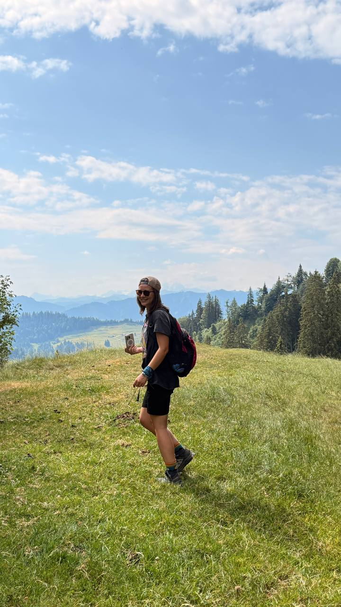
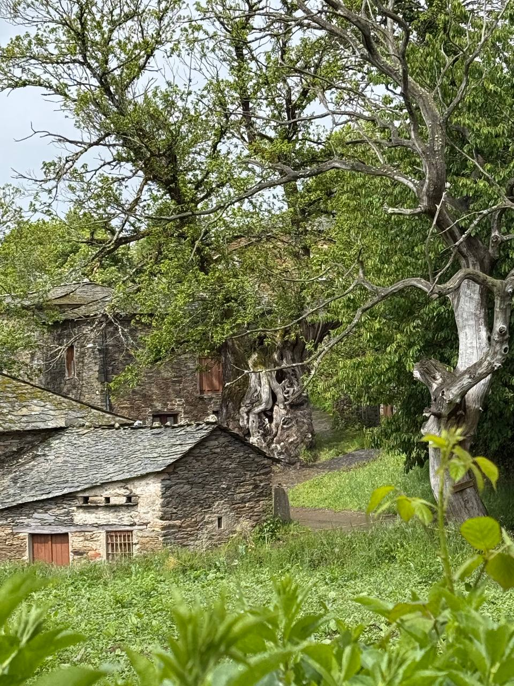
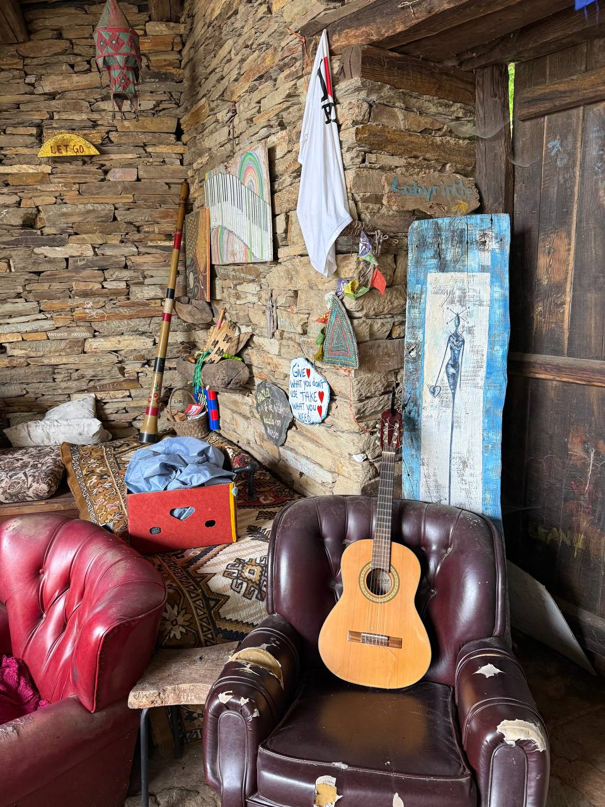
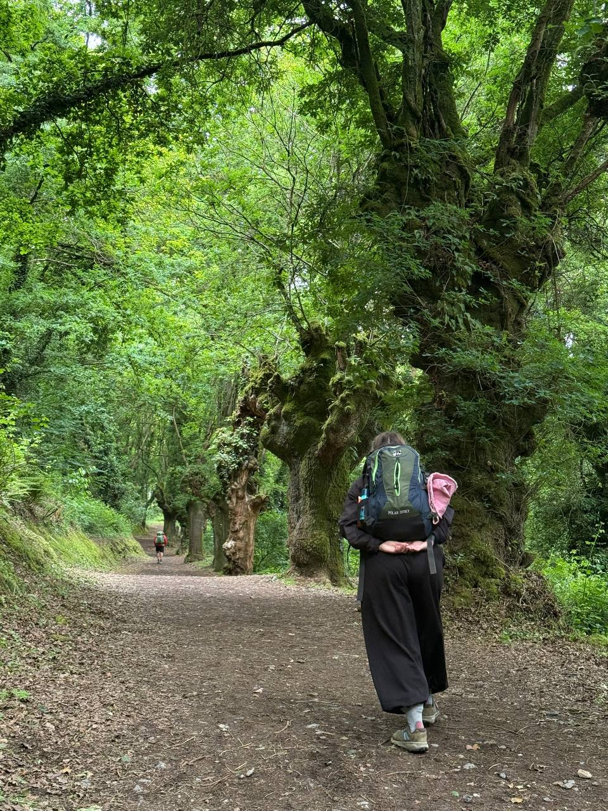
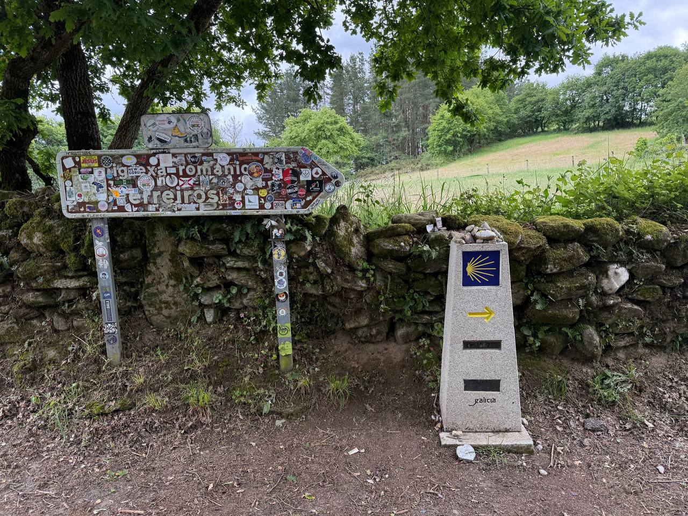
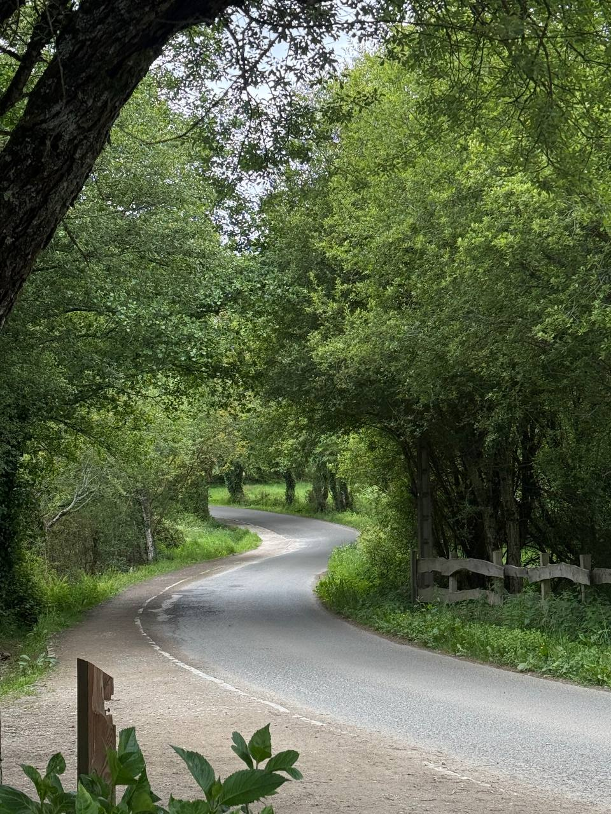
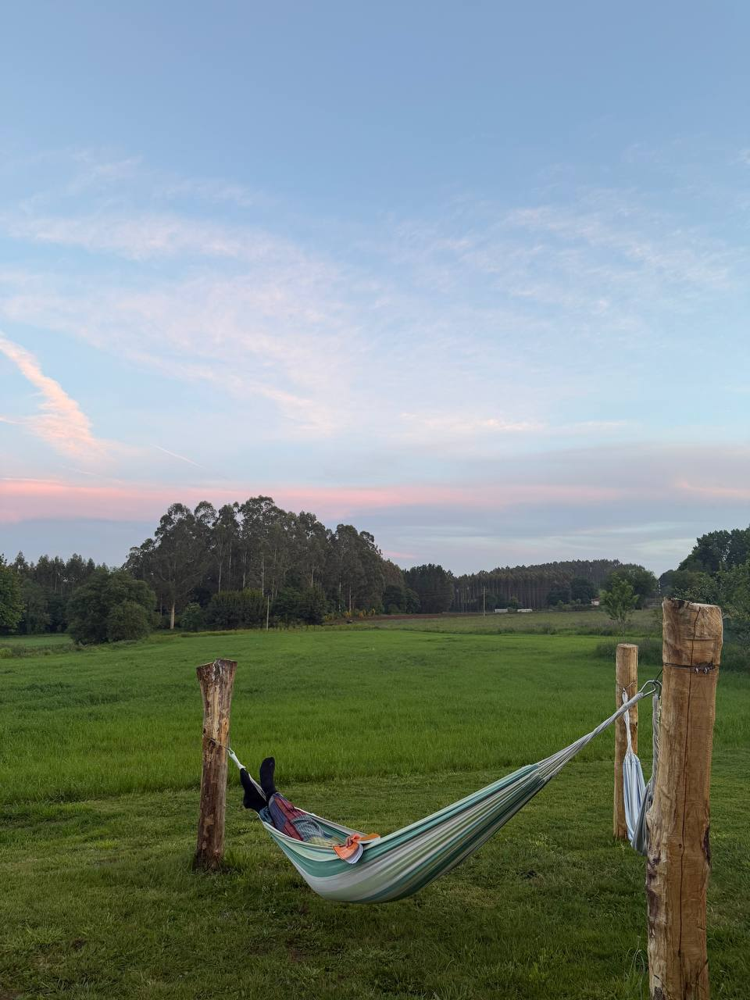
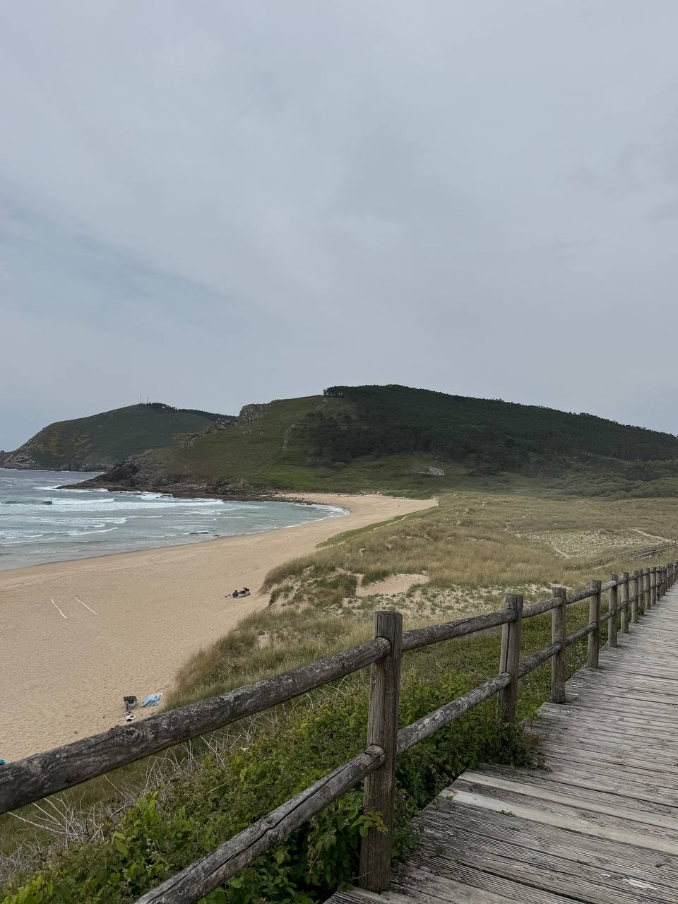
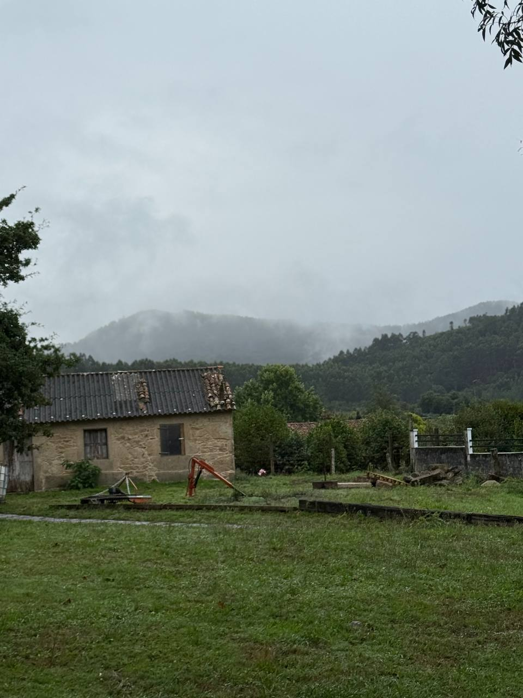
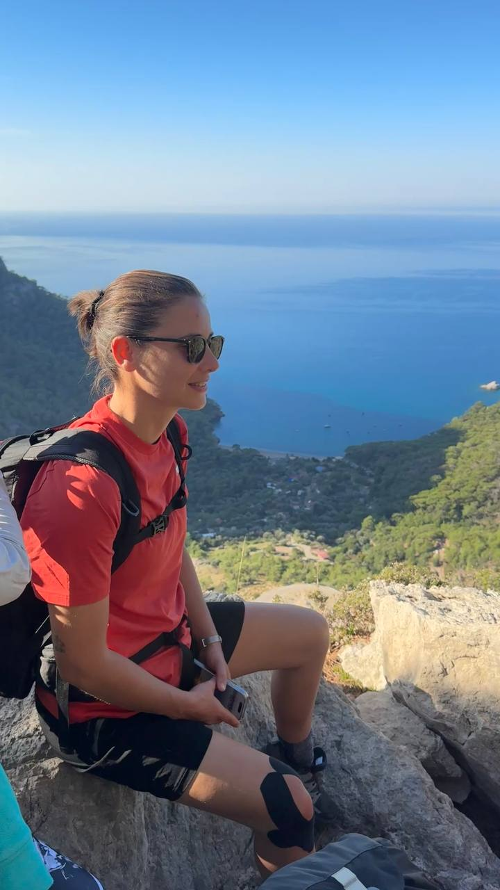

🇪🇸 ІСПАНІЯ • 133 КМ
📍 Старт: Triacastela → Santiago de Compostela • 133 км
Це не легенда, що Каміно змінює життя.
Це шлях до себе.
Французький шлях — це найвідоміший маршрут Каміно. За дев'ять днів ми пройдемо 133 кілометри мальовничою Галісією: через ліси, середньовічні міста, маленькі села та стародавні паломницькі стежки, які вже понад тисячу років змінюють життя людей.
Найкрасивіша частина Французького шляху.
Ми не поспішаємо. Насолоджуємося дорогою, природою та моментами, які залишаються в пам'яті назавжди.
Завершимо Каміно на березі Атлантичного океану — у легендарному Краї світу.
Трекінгове взуття
та шкарпетки.

🌿 Зустрічаємося в аеропорту Сантьяго-де-Компостела та вирушаємо до Triacastela.
🏡 Заселяємося, знайомимося один з одним, гуляємо старовинним містечком та налаштовуємося на початок нашого Каміно.
🍷 Попереду спільна вечеря, теплі розмови та перше відчуття, що велика пригода вже почалася.

📍18 км
🌿 Сьогодні ми залишаємо гірську тишу Triacastela й поступово занурюємося в атмосферу Каміно.
🏡 Дорога пролягає через старовинні кам'яні села, зелені пагорби та затишні лісові стежки, де кожен крок дарує відчуття спокою.
🤝 Це день, коли з'являється ритм дороги: перші щирі розмови, нові знайомства з пілігрімами та усвідомлення, що Каміно вже стало частиною нашої подорожі.
💚 Саме сьогодні починається справжня магія Шляху.

📍22 км
🌿 Саме від Саррії починається найпопулярніша частина маршруту, тож дорогою зустрічатимемо пілігрімів з усього світу.
🌳 Стежка пролягає крізь евкаліптові ліси, затишні галісійські села та старовинні кам'яні переходи, де час ніби сповільнюється.
🏛 Увечері ми прибудемо до Portomarín — міста з неймовірною історією. Після будівництва водосховища його перенесли на нове місце, розібравши історичні будівлі камінь за каменем.
💛 День, коли дорога знайомить із людьми, а історія — дивує.

📍25 км
🌿 Сьогодні на нас чекають широкі галісійські краєвиди, м'які пагорби та стежки, що плавно піднімаються й спускаються, ніби хвилі.
🏡 Дорогою проходитимемо через невеликі села з кам'яними будинками, старовинні церкви та куточки, де життя століттями зберігає свій неспішний ритм.
✨ Це день, коли тиша перестає бути порожньою — вона стає простором для відпочинку, роздумів і внутрішнього спокою.
💛 Palas de Rei зустріне нас затишною атмосферою справжньої Галісії, де кожен день тече без поспіху.

📍29 км
🌿 Найдовший день нашої подорожі, але й один із найяскравіших.
🐙 Дорогою завітаємо до Меліде — гастрономічної столиці Галісії, де за бажанням можна скуштувати знаменитий pulpo a la gallega — восьминога по-галісійськи.
🧀 Фінішуємо в Арсуа — місті, яке славиться своїм ніжним місцевим сиром і гостинністю.
💛 День, коли Каміно відкривається не лише через краєвиди, а й через смаки Галісії.

📍19 км
🌿 Один із найлегших і найспокійніших етапів нашого Каміно.
✨ Це день, щоб насолодитися дорогою без поспіху, відчути вдячність за вже пройдений шлях і набратися сил перед фінальним етапом.
🌳 Стежки пролягають крізь ліси, фермерські господарства та невеликі села, де життя тече у своєму неспішному ритмі.
💛 Завтра нас чекає зустріч із Santiago de Compostela — кінцевою точкою нашої великої пригоди.

📍20 км
🌿 Останній день Каміно — особливий і дуже емоційний.
🌄 Через Monte do Gozo вперше відкривається вид на Santiago de Compostela — момент, який назавжди залишається в пам'яті пілігрімів.
⛪ Фінал — площа перед собором, де втома змішується з радістю, а весь шлях перетворюється на спогад.
✨ Тут знаходиться найбільше кадило у світі — символ величі цього місця.
🙏 О 19:00 ми відвідаємо урочисту службу в соборі.
📜 Саме тут ми отримаємо останню печатку в паспорт пілігріма та сертифікат про проходження Шляху.
💛 Каміно завершується, але залишається всередині назавжди.

🌿 Зранку вирушаємо автобусом до мису Фіністерра — місця, яке століттями вважали краєм світу.
🌊 Це також день зустрічі з океаном — момент, коли Каміно відкривається у своїй новій стихії.
🌊 Колись тут вірили, що закінчується відомий світ, і починається остання подорож душі. Стоячи на скелях, де Атлантичний океан зустрічається з небом, легко зрозуміти, чому.
🗺 Нас чекає підйом до легендарного маяка та символічної позначки 0 км — унікальної точки всього Каміно.
✨ Тут багато пілігрімів по-справжньому відчувають завершення свого шляху.
🌅 Ми не поспішаємо. Сідаємо на скелях, вдихаємо океанське повітря, слухаємо хвилі та проводжаємо сонце за горизонт.
💛 Справжній кінець Каміно — це не «0 км», а те, з чим ти повертаєшся всередині.
❤️ Обіймаємося, сміємося, плачемо і прощаємося…
💛 Каміно не закінчується. Воно назавжди залишається частиною нас.

Я за простоту, легкість і відчуття свободи. Люблю життя, ціную справжність.
Саме це я бачу на шляху в Каміно, що надихає мене відкриватись світу і йти далі.
Все найважливіше вже включено
Якщо відчуваєте, що настав ваш час — приєднуйтеся до нашої групи.